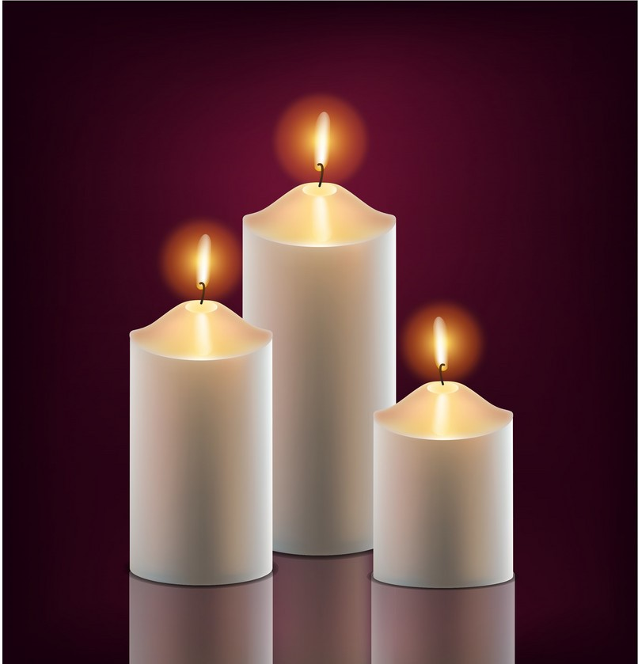
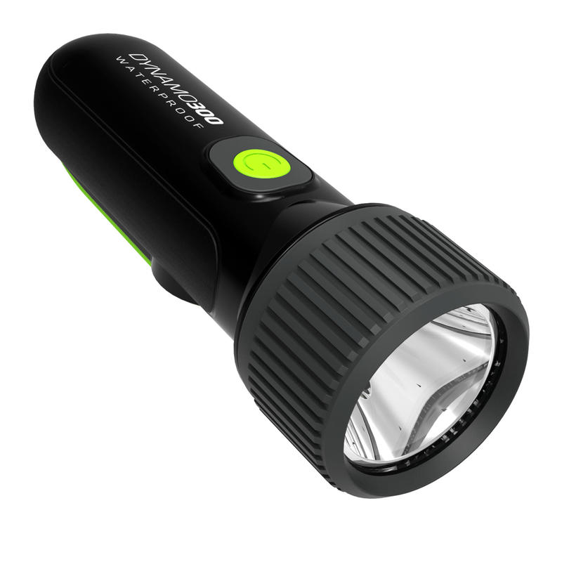

What you should know about the proposed lighting of Diyas on 05th April at 09:00 PM by PM Modi. There is a 21-day lockdown in the country to contain the spread of novel coronavirus, which has so far infected over 2,500 people in the country.
Prime Minister Narendra Modi in a video message to the nation on Friday, started his address by thanking the people for coming together on 22 March to appreciate the workers involved in essential services. The PM acknowledged the unity shown by the citizens of the country who came out to their balconies and clapped for workers in the forefront of the battle against Covid-19 . He then requested all citizens of the country to switch off the lights in their homes for 9 minutes on April 5 at 9 pm and light candles and diyas to display solidarity in the fight againt coronavirus.
Following activities are proposed by PM Modi


This activity is proposed by prime minister for 9 whole minutes on . However netizens are excited and it may continue for a whole hour.
It is expected that people will be clapping again.
Watch Full video of PM Modi's speech.